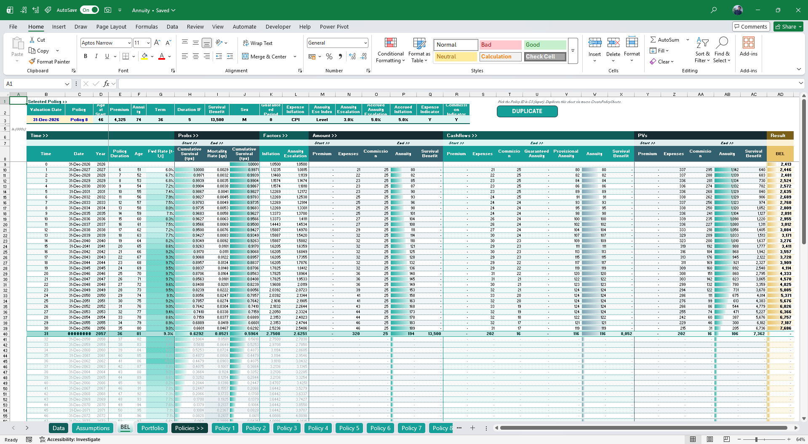
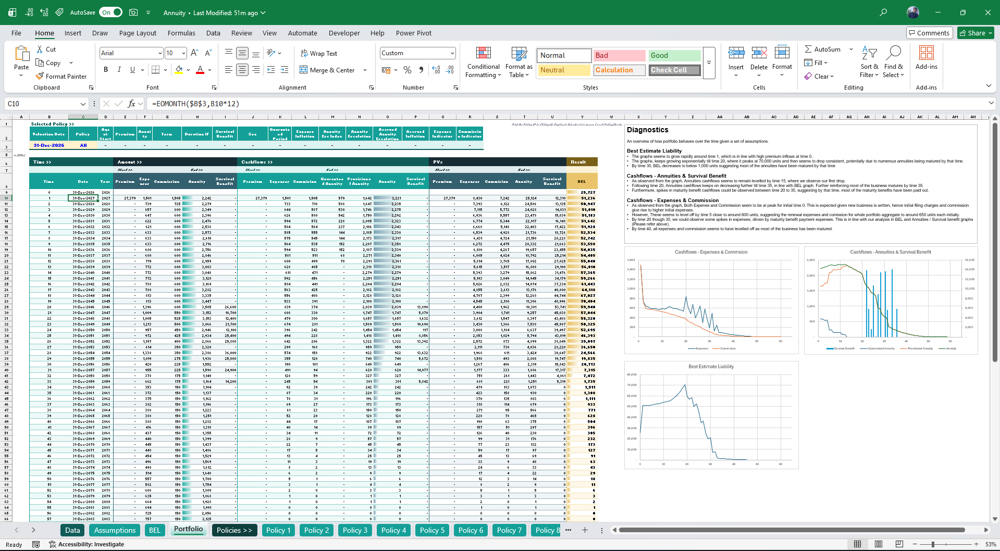
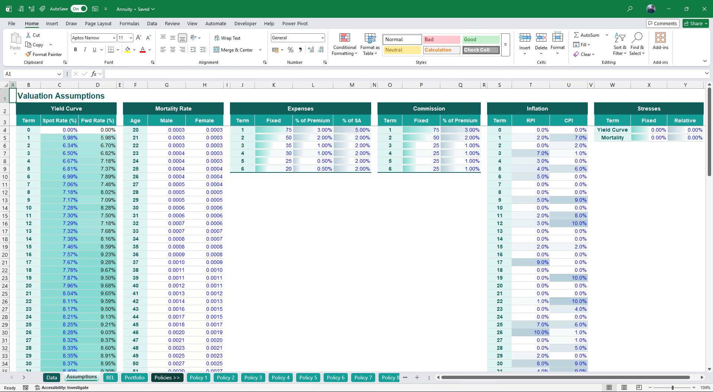
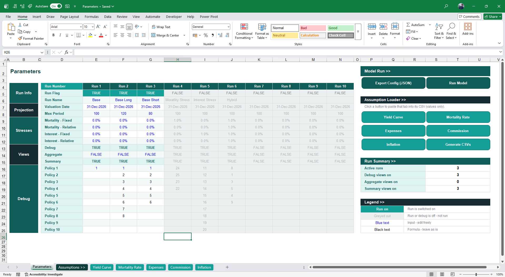
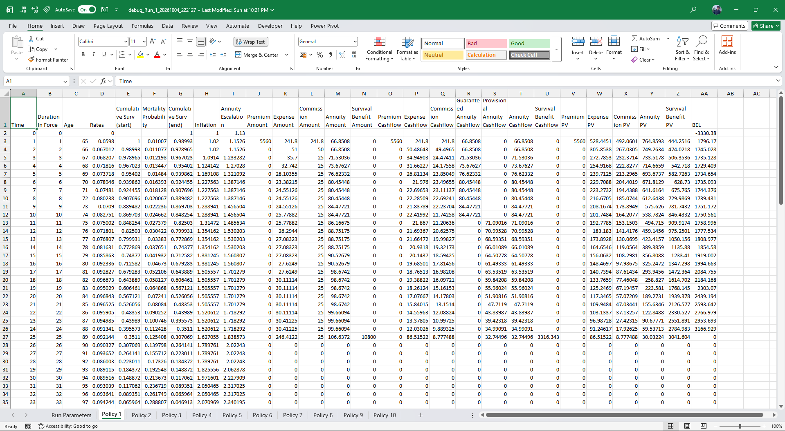
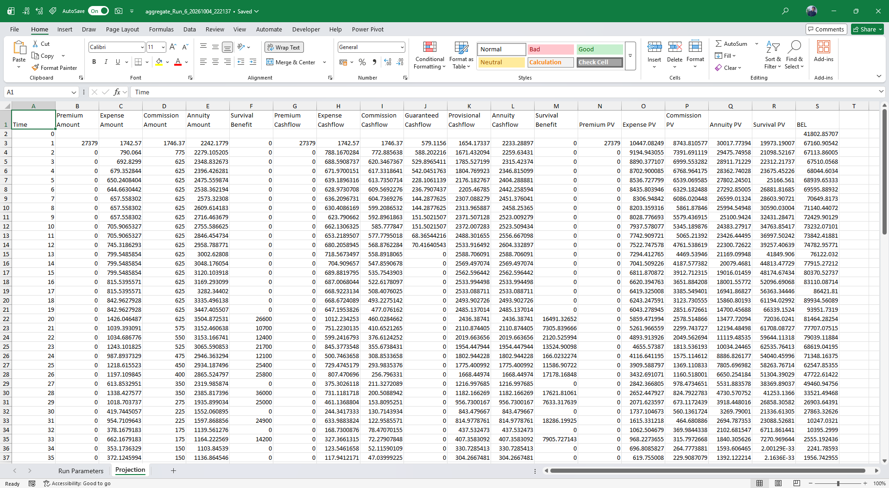
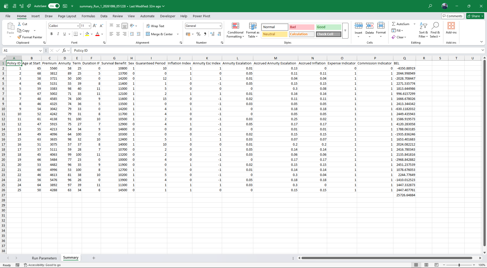

Policy-level projection
Projects individual annuity contracts through their full term.
Models · Case Study
An actuarial model for projecting annuity cashflows, survival benefits and policy-level reserves; built in Excel with configurable mortality, discounting and policy assumptions, and rebuilt in Python for scalable, multi-run execution.
I built an Excel based actuarial model to project future annuity cash flows and calculate policy level reserves under specified mortality, interest-rate and policy assumptions. The model is organised as a single directional pipeline, from raw policy data through to a policy level reserve summary.
The reserve isn't one formula - it's five steps chained together, each feeding the next, mirroring how the model's BEL sheet actually walks each policy forward year by year. Starting from age and sex specific mortality, the model builds up the odds a policyholder is still alive in each future year, uses that to weight every cash flow - premiums coming in, expenses, commission and annuity payments paid out - discounts each by the forward yield curve, and sums the result into a single best-estimate liability (BEL) per policy.
The single year mortality rate at each attained age, held separately by sex.
Symbols q = mortality rate · x = age at entry · k = future year
The following screenshots provide an overview of the input interface, assumption module and projection table. The underlying Excel workbook is available selectively upon request.



Projects individual annuity contracts through their full term.
Applies survival probabilities throughout the projection.
Supports increasing annuity payments over time.
Discounts projected cash flows using valuation assumptions.
Calculates policy-level present values.
Tests changes in key assumptions.
Reduces manual intervention through structured formulas.
Cross-checks outputs and intermediate calculations.
Aggregates policy-level results into portfolio metrics.
Validation is treated as part of the calculation, not an afterthought.
All figures below use synthetic demonstration data, not real employer or client data.


The Excel model was the initial calculation framework. The Python rebuild is now live: Excel remains the front-end for assumptions and configuration, while a Python engine does the heavy lifting behind it.
Excel is excellent for transparency, but a policy-by-policy, year-by-year projection hits its limits quickly on large portfolios. Moving the engine to Python keeps the same actuarial logic while removing those limits.
Handles massive portfolios that would crash or crawl in Excel.
NumPy arrays project every policy at once instead of cell by cell.
Up to 10 configurations, base and stressed, run in a single click.
Every run is defined by an exported JSON config and a fixed virtual environment.
VBA triggers the full pipeline, so no manual copy-paste between steps.
Assumptions and settings stay in Excel; results return as Excel files.
Up to 10 model runs executed together, each with its own name and settings.
Fixed and relative shocks to mortality rates and the yield curve, per run.
Policyholder-level projection for up to 10 policies: time points, duration in force, mortality rates, premium, expense, commission, survival benefit, cash flows, present values and BEL.
Portfolio-wide amounts, cash flows, present values and BEL.
Time 0 BEL for every policyholder, shown alongside policy information in one table.
Yield curve, mortality, expenses, commission and inflation tabs, loaded from CSV with one click.
The whole run is driven from the Parameters workbook. Python and pandas stay behind the scenes.
Enter tables under each assumption tab.
Set runs, stresses and views on the Parameters tab.
Config and assumptions are written out.
VBA starts Python in a virtual environment.
NumPy vectorises the projection across all policies.
pandas consolidates results into Excel files.
The Excel front-end that controls the Python engine, followed by the three output views.




This model has been built to be a proof of concept how python could be integrated within excel for scalable solutions. Please refer to model documentation below to gain more insights.